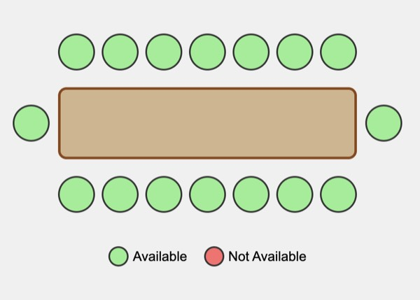

Writing
Model Maker Moats
April 2026
There is no question language models will create immense value. Even if development halted today, there would be decades of elevated growth as models diffuse through the economy. What are the barriers to creating a model? Models are created from a combination of three ingredients: algorithms, compute, and data...
AI and Software Power
February 2026
Persistent differential returns are driven by power. Power comes in seven forms: scale economies, network economies, switching costs, cornered resources, counter positioning, branding, and process power. For anyone familiar with Hamilton Helmer, this will sound familiar. His "seven powers" framework is a classic starting point for thinking about businesses...
Future Writing
- AI in education My rough estimate is that 1% of people have access to world-class education. This is unfair and a huge waste of human potential. AI can make a massive impact on the world if applied effectively in education. I want to write about current approaches and major obstacles for widespread adoption.
- Single matrix to attention One can implement all-to-all communication between tokens with a single dense matrix. I want to develop attention starting from this matrix and examine why the assumptions underlying the attention mechanism work so well.
- The Correlation Curse Without correlations, the universe would be an uninteresting uniform soup of particles. Correlations are the source of structure and complexity. They are also the reason modeling the universe is so complicated. I want to write about common difficulties that arise when modeling correlated quantities and approaches to tackling them.
- Free energy is not fundamental When I first learned about free energy, I found it very confusing. I've since grown comfortable with the concept. I want to share my thoughts on what free energy is and why it matters.
- Engineering is about humans At first glance, engineering seems to be about things. Math, code, and specifications. But the best systems are rarely the ones with the most sophisticated engineering. The best systems deeply understand the user and align the trade-offs with their needs. The hardest part of engineering a system is often to understand how humans want to use it.
- Matrix multiplication from many lenses This simple operation has a surprising number of ways it can be interpreted. Picking the contextually correct perspective can significantly simplify understanding its use. I've come across many useful ways to view matrix multiplication and want to collect and compare them in a single place.
Academic

Alkaline Earth Bismuth Fluorides as Fluoride-Ion Battery Electrolytes
ACS Omega, September 2024

Energy Technologies
Independent Study, Harvard, Fall 2022

Superfluid Helium
Advanced Lab, Harvard, Fall 2022

Mössbauer Spectroscopy
Advanced Lab, Harvard, Fall 2022
Software
ClassPlanner
SwiftUI · Core Data

Map Vibes
Python · matplotlib · rasterio

The Waverly Table
Flask · Cloudflare Pages